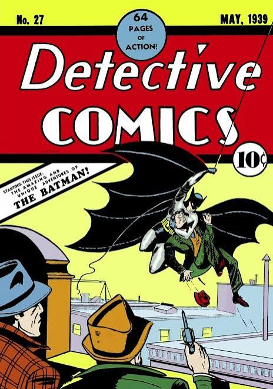
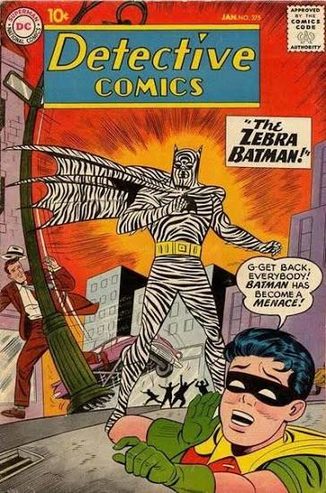
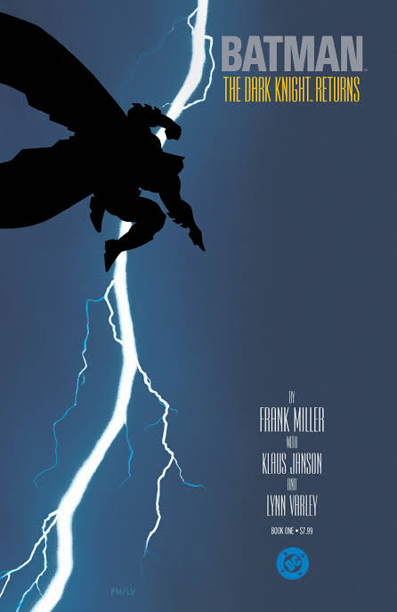
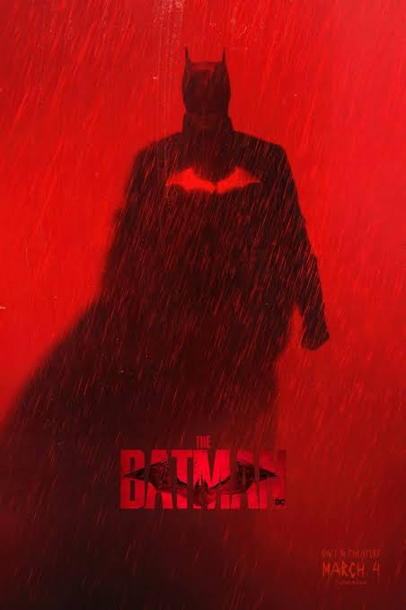

Pada Mei 1939, di tengah bayang-bayang Depresi Besar dan ancaman perang dunia, Detective Comics #27 memperkenalkan sosok pahlawan yang tidak memiliki kekuatan super: Batman. Karya Seniman Komik Bob Kane dan Penulis Bill Finger ini awalnya hanyalah satu dari banyak tokoh pulp, namun lebih dari delapan dekade kemudian ia menjadi salah satu ikon budaya populer paling berpengaruh di dunia.
Klik link-link dibawah ini untuk mempelajari lebih lanjut tentang Batman:
1. The Entire History of Batman oleh alex lennenPencarian Lanjut:
Batman lahir dari upaya DC Comics menyaingi kesuksesan Superman yang debut setahun sebelumnya. Bob Kane merancang konsep dasarnya, sementara Bill Finger menyumbang unsur-unsur penting seperti kostum berjubah, nama Bruce Wayne, hingga kota Gotham, meski kontribusinya baru diakui secara resmi puluhan tahun kemudian. Pada awal kemunculannya, Batman adalah tokoh yang jauh lebih suram dan brutal daripada citra yang kemudian dikenal luas. Ia beroperasi sebagai vigilante yang tidak ragu menggunakan kekerasan, dengan latar tragedi terbunuhnya kedua orang tuanya yang menjadi dasar motivasinya. Kehadiran Robin pada 1940 kemudian melunakkan nada cerita dan memperluas daya tarik Batman bagi pembaca muda.

Pergeseran besar terjadi setelah terbitnya Seduction of the Innocent (1954) karya psikiater Fredric Wertham, yang menuding komik merusak moral anak-anak. Tekanan publik melahirkan Comics Code Authority, yang membatasi kekerasan dalam komik. Akibatnya, cerita Batman bergeser ke petualangan fantastis yang ringan, puncaknya pada serial televisi 1966 yang bernuansa kamp dan parodi. Fase ini menunjukkan bahwa citra Batman sangat dipengaruhi iklim sosial dan regulasi pada masanya.

Memasuki 1970-an, penulis Denny O'Neil dan ilustrator Neal Adams berupaya mengembalikan Batman ke akar aslinya sebagai detektif yang beroperasi di bayang-bayang kota. Lahirnya musuh seperti Ra's al Ghul menandai arah cerita yang lebih serius dan kompleks. Perubahan ini mencapai puncaknya pada 1980-an lewat The Dark Knight Returns (1986) karya Frank Miller, yang menampilkan Batman paruh baya dengan sikap keras dan moralitas yang diperdebatkan, serta The Killing Joke (1988) karya Alan Moore yang menggali hubungan psikologis Batman dengan Joker. Kedua karya ini mengubah cara industri memandang komik superhero, dari hiburan anak-anak menjadi medium naratif yang mampu mengangkat tema trauma, obsesi, dan batas keadilan.

Citra gelap tersebut kemudian menjangkau khalayak yang jauh lebih luas melalui layar. Film Batman (1989) arahan Tim Burton membuktikan bahwa versi serius karakter ini layak secara komersial, disusul serial animasi Batman: The Animated Series (1992) yang dipuji karena kedalaman karakternya. Trilogi The Dark Knight karya Christopher Nolan (2005-2012) kemudian mengangkat Batman ke ranah drama kriminal realistis yang diapresiasi kritikus, dan The Batman (2022) melanjutkan tradisi itu dengan penekanan pada sisi detektif. Setiap adaptasi menafsirkan ulang Batman sesuai kegelisahan zamannya, sehingga ia tidak pernah menjadi figur yang statis.
